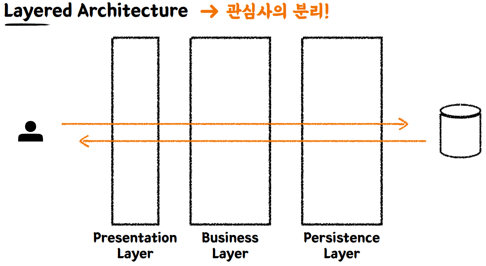
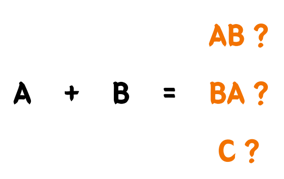

레이어드 아키텍처와 테스트

왜 레이어를 구분하는지?
- 관심사의 분리
각 레이어별로 역할을 분담해서 기능을 나누자
책임을 나누고 유지보수하기 용이하게 만들자
테스트하기 복잡해 보인다?
테스트를 할때 테스트하기 어려운 부분을 분리하고 테스트 하고자 하는 영역에 집중한다.
단위 테스트에서 외부 세계를 분리했던 원리를 그대로 적용시키면 됩니다.
명시적이고 이해할 수 있는 문서형태로 테스트를 깔끔하게 작성한다.
BDD 방식을 통해
A는 B다,A이면 B가 아니고 C다.
다른 아키텍처를 테스트를 해도 위 테스트 방식은 동일합니다.
A+B ?
A 모듈이 있고, B 모듈이 있다고 할 때, 각자의 모듈은 작게는 클래스, 혹은 여러개의 클래스로 구성되었습니다.

통합 테스트(Integration test)
단위 테스트로는 한계가 있기 때문에 통합테스트를 해야합니다.
여러 모듈이 협력하는 기능을 통합적으로 검증하는 테스트
일반적으로 작은 범위의 단위 테스트만으로는 기능 전체의 신뢰성을 보장할 수 없다.
다른 기능이 나타날수 있습니다.
풍부한 단위 테스트 & 큰 기능 단위(시나리오 단위)를 검증하는 통합 테스트
Last modified: 18 1월 2024